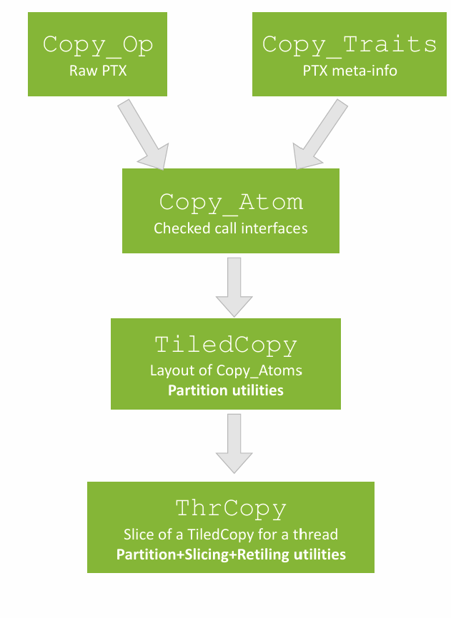
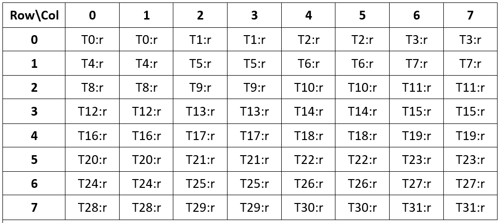
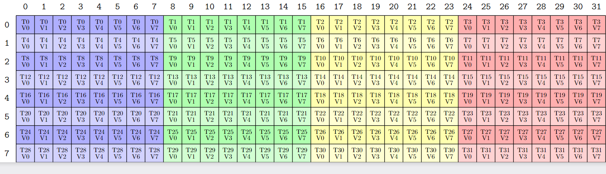

Copy Hierarchy
前面介绍MMA时，我们从一条PTX指令一路向上讲到了MMA_Atom、TiledMMA、ThrMMA和cute::gemm。CuTe中的copy也遵循类似的层次：最底层包装具体的数据搬运指令，中间层描述指令的Thread-Value映射，再向上把一条指令扩展成多个线程协作的copy tile，最后由cute::copy真正执行搬运。

CopyOperation：包装一条具体的copy指令，声明指令的source/destination寄存器接口。Copy_Traits：描述该指令需要多少线程，以及source和destination两侧的bit级Thread-Value Layout。Copy_Atom：把bit级Traits重解释为指定逻辑元素类型，形成一次最小copy操作。TiledCopy：把Copy Atom铺到更大的逻辑tile上，描述多个线程分别负责哪些value。ThrCopy：固定当前thread id，并用partition_S/D切出该线程的source/destination视图。cute::copy：沿Tensor的外层mode循环，最终调用Copy Atom中的底层指令。
本文使用两条Ampere GEMM中常见的路径作为主例子：
1GMEM --cp.async--> SMEM --ldmatrix--> RMEM --mma.sync--> Tensor Core
cp.async解决global memory到shared memory的异步、向量化搬运；ldmatrix解决shared memory中的矩阵tile如何按照Tensor Core需要的fragment布局进入每个lane的寄存器。理解这两种完全不同的指令之后，Copy_Atom为什么需要同时描述source和destination映射也就比较直观了。
CopyOperation
CopyOperation是最靠近硬件的一层。和MMAOperation类似，它声明了PTX需要用到的寄存器数量和包装了PTX指令。
ldmatrix
Tensor Core的MMA指令中，每个lane必须按照PTX规定的fragment格式持有A/B operand。Turing开始提供的ldmatrix正是为这个过程设计的，一个warp协作地从shared memory读取若干个8 x 8、元素宽度为16-bit的矩阵，并把结果分发到32个lane的寄存器中。
CuTe对ldmatrix.sync.aligned.x1.m8n8.shared.b16的包装如下：
1// Source from include/cute/arch/copy_sm75.hpp
2struct SM75_U32x1_LDSM_N
3{
4 using SRegisters = uint128_t[1];
5 using DRegisters = uint32_t[1];
6
7 CUTE_HOST_DEVICE static void
8 copy(uint128_t const& smem_src,
9 uint32_t& dst)
10 {
11#if defined(CUTE_ARCH_LDSM_SM75_ACTIVATED)
12 uint32_t smem_int_ptr = cast_smem_ptr_to_uint(&smem_src);
13 asm volatile("ldmatrix.sync.aligned.x1.m8n8.shared.b16 {%0}, [%1];\n"
14 : "=r"(dst)
15 : "r"(smem_int_ptr));
16#endif
17 }
18};
这条指令含义如下：
ldmatrix.sync表示同步搬运，这条指令发射后会阻塞 Tensor Core计算。aligned表示这个PTX指令需要一个warp内所有lane协同执行这个指令。x1.m8n8表示整个warp读取 1 个8 x 8矩阵。矩阵一共有8 * 8 * 16 bit = 1024 bit = 128 byte。结果平均分给32个lane，因此每个lane得到一个32-bit寄存器，也就是两个16-bit元素。这个指令还有x2和x4的版本，shared表示source，从Shared Memory搬运到寄存器b16是数据类型

SRegisters = uint128_t[1]并不表示每个lane都实际搬运128-bit到自己的寄存器。这个类型描述source侧传给指令的是一个能覆盖128-bit行数据的shared memory地址视图。对于x1，只有lane 0到7提供的8个行地址会被硬件使用，整个warp仍然都要执行同一条ldmatrix，随后硬件连接电路把加载结果分发给全部32个lane。
cp.async
Ampere的cp.async用于从global memory直接向shared memory发起异步copy，其不需要在寄存器中转，因此可以降低中间寄存器压力，并允许copy和后续计算重叠。
CuTe中的SM80_CP_ASYNC_CACHEALWAYS包装如下：
1// Source from include/cute/arch/copy_sm80.hpp
2template <class TS, class TD = TS>
3struct SM80_CP_ASYNC_CACHEALWAYS
4{
5 using SRegisters = TS[1];
6 using DRegisters = TD[1];
7
8 static_assert(sizeof(TS) == sizeof(TD));
9 static_assert(sizeof(TS) == 4 || sizeof(TS) == 8 || sizeof(TS) == 16);
10
11 CUTE_HOST_DEVICE static void
12 copy(TS const& gmem_src,
13 TD & smem_dst)
14 {
15#if defined(CUTE_ARCH_CP_ASYNC_SM80_ENABLED)
16 TS const* gmem_ptr = &gmem_src;
17 uint32_t smem_int_ptr = cast_smem_ptr_to_uint(&smem_dst);
18 asm volatile("cp.async.ca.shared.global.L2::128B [%0], [%1], %2;\n"
19 :: "r"(smem_int_ptr),
20 "l"(gmem_ptr),
21 "n"(sizeof(TS)));
22#endif
23 }
24};
这条指令含义如下：
cp.async表示异步搬运，这条指令发射后不会阻塞 CUDA Core/ALU，SM 发射完指令后可以立即去执行后续的计算指令，数据的传输过程由专用的异步拷贝硬件逻辑在后台完成。.ca（Cache Always）表示数据可以缓存在所有层级；CuTe还提供使用.cg（Cache Global）策略的SM80_CP_ASYNC_CACHEGLOBAL。shared.global表示 目标空间.源空间。L2::128B是L2 prefetch size hint，数据对齐与传输块大小为 128 字节，不表示当前线程一次搬运128 byte。真正的单线程copy宽度由第三操作数sizeof(TS)决定，只能是4、8或16 byte。若TS = uint128_t，当前线程搬运的是16 byte。这是一条cp.async的最大搬运粒度。 更多有关cp.async 可以参考NVIDIA PTX ISA
最常见的写法是把128b访存和真实逻辑元素类型分开，即常说的128b合并访存：
1using GmemCopyAtom = Copy_Atom<
2 SM80_CP_ASYNC_CACHEALWAYS<uint128_t>,
3 half_t>;
这里每次搬一个uint128_t，而Copy_Atom把这128 bit解释为8个half_t。它只改变CuTe用来分区Tensor的value粒度，不会做uint128_t到half_t的数值转换。
cp.async同步原语
发出cp.async之后，数据不一定已经可以被后续指令使用。CuTe提供了与PTX group机制对应的接口：
1CUTE_HOST_DEVICE
2void cp_async_fence()
3{
4#if defined(CUTE_ARCH_CP_ASYNC_SM80_ENABLED)
5 asm volatile("cp.async.commit_group;\n" ::);
6#endif
7}
8
9template <int N>
10CUTE_HOST_DEVICE
11void cp_async_wait()
12{
13#if defined(CUTE_ARCH_CP_ASYNC_SM80_ENABLED)
14 if constexpr (N == 0) {
15 asm volatile("cp.async.wait_all;\n" ::);
16 } else {
17 asm volatile("cp.async.wait_group %0;\n" :: "n"(N));
18 }
19#endif
20}
cp_async_fence()发出的是cp.async.commit_group，把当前线程此前尚未提交的cp.async组成一个group，但不等待group完成，类似于插桩。
cp_async_wait<N>()会阻塞当前线程，直到此前提交但尚未完成的group数量不大于N。
1// Example of .wait_group :
2cp.async.ca.shared.global [shrd3], [gbl3], 8;
3cp.async.commit_group; // End of group 1
4
5cp.async.cg.shared.global [shrd4], [gbl4], 16;
6cp.async.commit_group; // End of group 2
7
8cp.async.cg.shared.global [shrd5], [gbl5], 16;
9cp.async.commit_group; // End of group 3
10
11cp.async.wait_group 1; // waits for group 1 and group 2 to complete, only one group(group 3) is on the way
等待是per-thread的，而一个CTA通常会让不同线程copy不同的shared-memory位置，之后又由另一些线程消费这些位置。因此GEMM pipeline在等待目标stage之后通常还需要__syncthreads()，保证CTA内生产者和消费者在使用该stage前完成同步。commit_group、wait_group和CTA barrier解决的是不同层次的问题，不能互相替代。当然，SM90推出了更细粒度的同步原语mbarrier，这部分会和SM90一起讲。
更多有关cp.async.wait_group 可以参考NVIDIA PTX ISA
Copy_Traits
Copy_Traits补充三类信息：参与的逻辑线程、source侧映射、destination侧映射。
与MMA Traits直接用逻辑元素描述TV Layout不同，Copy Traits先用bit作为统一单位。这样同一条128-bit copy指令既可以服务8个half_t，也可以服务4个float，而不用为每一种元素类型重复定义Traits。
ldmatrix Traits
SM75_U32x1_LDSM_N的Traits如下：
1template <>
2struct Copy_Traits<SM75_U32x1_LDSM_N>
3{
4 using ThrID = Layout<_32>;
5
6 using SrcLayout = Layout<Shape <Shape < _8,_4>,_128>,
7 Stride<Stride<_128,_0>, _1>>;
8
9 using DstLayout = Layout<Shape <_32,_32>,
10 Stride<_32, _1>>;
11
12 using RefLayout = DstLayout;
13};
三个Layout的单位都是bit：
ThrID = Layout<_32>表示这是一个32线程的warp级操作。SrcLayout描述(src-thread, src-bit)到source地址的映射。thread mode的(_8,_4):(_128,_0)中，第二层stride为0，表示32个lane只有8个不同的行地址；这正对应x1只使用lane 0到7提供地址的硬件行为。DstLayout = (_32,_32):(_32,_1)表示32个lane各得到连续的32 bit。RefLayout是CuTe协调source和destination映射时使用的参考TV Layout。这里结果分发方式就是参考布局。
source和destination的每线程value数量可以不同。以half_t解释该Atom时，提供有效行地址的lane需要让source视图覆盖一行8个half，而每个lane的destination只有2个half。ldmatrix的价值正是在一条warp级指令中完成这种collective load和fragment分发。
cp.async Traits
cp.async的Traits简单得多：
1template <class S, class D>
2struct Copy_Traits<SM80_CP_ASYNC_CACHEALWAYS<S,D>>
3{
4 using ThrID = Layout<_1>;
5 using SrcLayout = Layout<Shape<_1,Int<sizeof_bits<S>::value>>>;
6 using DstLayout = Layout<Shape<_1,Int<sizeof_bits<D>::value>>>;
7 using RefLayout = SrcLayout;
8};
ThrID = Layout<_1>表示一个Atom只涉及一个线程。source和destination都是(1, sizeof_bits<T>)，所以它们是一一对应的bit copy。当S = D = uint128_t时，一个Atom覆盖1个线程和128 bit；随后Copy_Atom<..., half_t>会把它重解释为1个线程和8个half value。
Copy_Atom
Copy_Atom把CopyOperation、Copy_Traits和用户指定的内部value类型组合在一起：
1template <class CopyOperation, class CopyInternalType>
2struct Copy_Atom<CopyOperation, CopyInternalType>
3 : Copy_Atom<Copy_Traits<CopyOperation>, CopyInternalType>
4{};
在具体实现中，它会把Traits中的bit Layout recast为CopyInternalType对应的value Layout：
1using ValType = CopyInternalType;
2
3using ValLayoutSrc = decltype(
4 recast_layout<uint1_t, ValType>(BitLayoutSrc{}));
5using ValLayoutDst = decltype(
6 recast_layout<uint1_t, ValType>(BitLayoutDst{}));
7using ValLayoutRef = decltype(
8 recast_layout<uint1_t, ValType>(BitLayoutRef{}));
因此，Copy Atom表达的是“一次最小指令中，哪些线程把哪些逻辑value从source映射到destination”。例如：
1Copy_Atom<SM80_CP_ASYNC_CACHEALWAYS<uint128_t>, half_t>
2 一个线程，一次GMEM->SMEM搬运8个half
3
4Copy_Atom<SM75_U32x4_LDSM_N, half_t>
5 一个warp，一次SMEM->RMEM加载4个8x8 b16矩阵
6 每个lane最终得到4个uint32_t，也就是8个half
Copy_Atom::call()要求source和destination都是rank-1 Tensor。当value数量满足指令要求时，它进入copy_unpack，把逻辑元素Tensor重新解释为CopyOperation声明的SRegisters和DRegisters类型，最终调用CopyOperation::copy()。这与MMA_Atom::call()先检查fragment、再unpack并调用PTX包装的结构基本一致。
TiledCopy
一个Copy Atom只描述一次最小copy。GEMM中通常需要整个CTA协作搬运一个二维tile，因此还要定义：
ThrLayout线程如何排列在tile上。ValLayout每个线程的多个value如何排列。
1TiledCopy copyA = make_tiled_copy(
2 Copy_Atom<SM80_CP_ASYNC_CACHEALWAYS<uint128_t>, half_t>{},
3 Layout<Shape<_8,_4>, Stride<_4,_1>>{}, // thread layout
4 Layout<Shape< _1,_8>>{}); // value layout

这个例子中的thread layout把32个线程排成(8,4):(4,1),value layout表示每个线程在第一维取1个位置、第二维取连续8个half。两者通过raked_product组合后覆盖一个8 x 32的copy tile。因为每线程的8个half恰好是128 bits，所以每个线程执行一次128-bit cp.async。
ThrCopy
进入kernel后，需要从TiledCopy中取出当前线程的视图：
1ThrCopy thr_copy_a = copyA.get_slice(threadIdx.x);
2
3Tensor tAgA = thr_copy_a.partition_S(gA);
4Tensor tAsA = thr_copy_a.partition_D(sA);
这里同样没有发生数据搬运：
get_slice(threadIdx.x)只把当前thread id保存在ThrCopy中。partition_S(gA)使用Copy Atom的source映射切分gA。partition_D(sA)使用Copy Atom的destination映射切分sA。
假设gA表示(128,64,K_TILE)，sA表示三阶段pipeline中的(128,64,3)，前面的16 x 64 TiledCopy会得到类似的线程私有视图：
1tAgA: (CPY, CPY_M, CPY_K, K_TILE)
2tAsA: (CPY, CPY_M, CPY_K, PIPE)
其中CPY是一次Copy Atom内的value mode，这里size为8；CPY_M的size为8，因为16 x 64 copy tile还要沿M方向重复8次才能覆盖完整的128 x 64 CTA tile；CPY_K在这个配置中size为1。
真正执行一个global K tile到一个shared-memory stage的copy时，再固定最外层坐标：
1copy(copyA,tAgA(_,_,_,k_tile),tAsA(_,_,_,k_pipe));
这里传给copy的是copyA而不是thr_copy_a。CuTe甚至显式删除了直接接收ThrCopy的copy重载，强调ThrCopy的职责只是partition。线程映射已经体现在tAgA/tAsA的Layout中，执行策略仍然由TiledCopy继承的Copy Atom提供。
retile_S和retile_D
ThrCopy还提供retile_S/D。它们用于已有Tensor已经按照另一套逻辑布局完成线程分区、但底层Engine中的同一批数据需要被当前Copy Atom读写的场景。
典型例子是SMEM到RMEM的ldmatrix：
1TiledCopy s2r_copy_a = make_tiled_copy_A(s2r_atom_a, mma);
2ThrCopy s2r_thr_copy_a = s2r_copy_a.get_slice(threadIdx.x);
3
4Tensor tXsA = s2r_thr_copy_a.partition_S(sA);
5Tensor tXrA = s2r_thr_copy_a.retile_D(tCrA);
tCrA是MMA视角下的register fragment；tXrA是LDSM Copy视角下对同一批register的视图。retile_D不会分配第二份register，也不会重排数据，它只保留原Tensor的Engine并构造一个新的Layout。之后ldmatrix按照tXrA写入，gemm再按照tCrA读取同一批寄存器。
cute::copy
前面的对象都在描述映射，cute::copy才是真正执行copy的入口。指定Copy Atom时，其核心dispatch可以简化成：
1template <class... CopyArgs, class SrcTensor, class DstTensor>
2void copy(Copy_Atom<CopyArgs...> const& copy_atom,
3 SrcTensor const& src,
4 DstTensor & dst)
5{
6 if constexpr (rank(src) == 1) {
7 copy_atom.call(src, dst);
8 } else {
9 // 保留第0个Atom value mode，合并其余mode并循环
10 for (int i = 0; i < size_of_rest_modes; ++i) {
11 copy_atom.call(src_v(_,i), dst_v(_,i));
12 }
13 }
14}
因此传入：
1src/dst: (CPY, CPY_M, CPY_K)
时，CPY是一次底层指令处理的value mode，copy会遍历CPY_M * CPY_K个外层位置。每次循环取出一个rank-1 CPY fragment，进入Copy_Atom::call()，最后落到cp.async、ldmatrix或其他CopyOperation。
Wrap up
CuTe Copy体系解决的并不只是把一个赋值循环包装成copy()。它把硬件指令的寄存器接口、source/destination两侧不同的Thread-Value映射、CTA协作tile、线程私有视图以及最终dispatch统一在一套类型系统中。
本文最重要的几个结论是：
CopyOperation包装实际指令，Copy_Traits用bit级Layout描述指令语义，Copy_Atom再把它解释为逻辑元素。TiledCopy描述多个线程如何覆盖更大的copy tile，ThrCopy只负责为某个线程partition或retile Tensor。get_slice、partition_*和retile_*都不搬数据，cute::copy才会最终调用底层CopyOperation。cp.async是一线程一次4/8/16-byte的GMEM到SMEM异步copy；L2::128B只是prefetch hint。ldmatrix是warp级collective load，source地址提供方式和destination fragment分发方式不同，所以Copy Atom必须区分SrcLayout和DstLayout。make_tiled_copy_A/B和retile_D把LDSM Copy映射与已有MMA fragment衔接起来，但不会制造额外的数据重排。
下一篇将以一个完整的SM80 HGEMM为例，把Tensor、Layout Algebra、MMA Atom和本文的Copy Atom串起来，逐层追踪数据如何经过GMEM、SMEM和RMEM，最终进入Tensor Core。
Reference
https://docs.nvidia.com/cutlass/latest/media/docs/cpp/cute/0x_gemm_tutorial.html
https://docs.nvidia.com/cuda/parallel-thread-execution/#warp-level-matrix-instructions-ldmatrix